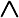
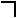
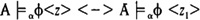

by Abraham Kandel
CRC Press, CRC Press LLC
ISBN: 084934297x Pub Date: 11/01/91
|
|
Fuzzy Expert Systems
by Abraham Kandel CRC Press, CRC Press LLC ISBN: 084934297x Pub Date: 11/01/91 |
| Previous | Table of Contents | Next |
Remarks
If any of the components in a compound formula has probability ⊥ (unknown), the whole formula has probability ⊥ except for existential formulas (which get ⊥ only if no positive probability value exist for any assignment of the variable). This rule is a candidate for reexamination in the future.
When probabilities are restricted to be only 0 or 1, these rules are compatible with the FOPC interpretations.
The definition of implication is part of the model, not of satisfaction. There is a big controversy concerning the functionality of the conditional connective, for example, Anderson and Belnap.1 To support our choice, note that it is rare in the context of expert systems reasoning that we compute the truth value of an implication based on the truth value of the components.
The probability of the disjunction of independent formulas could have been defined as the sum of the respective probabilities. This would require building into the model tools for the analysis of independence of formulas. Similarly, the probability of conjunction of formulas could have been defined as the product of the probability of the first formula and the conditional probability of the second formula. We adopted the definitions given in preceding Statements 4 and 5 for the sake of simplicity of implementation.
Satisfaction of φ ↔ Ψ may have a probability value different from that [φ → Ψ]  [Ψ ↔ φ]. Tautologies of FOPC involving implication do not necessarily hold in PL.
The relationship between the probability α of ∃νφ and the probability β of ∀ν  φ may satisfy β ≠ 1 - α.
Equality in our model is strict, not probabilistic. An alternative and more general approach is to allow elements of the universe to be equal with probability p (corresponding to a world in which facts are sometimes distinguishable, and sometimes indistinguishable). This is one of many possible generalizations of the proposed logic.
The proposed interpretation of the connectives is independent of the meaning of formulas. A sophisticated system may be able to determine the dependence/independence of the connected formulas (based on their meaning) and modify the rules accordingly (e.g., probability of “and” of complements may be set to zero).
Just as in FOPC,6 one can show that if two assignments z and z1 agree on all free variables of a formula φ, then . This implies that for assertions (formulas without free variables), the probability of satisfaction is independent of the specific assignment.
Example 4: Satisfaction of Formulas
We shall use the formulas of Example 2 and the model of Example 3:
Meaning is defined by a mapping of syntactical objects to semantic ones. An FOPC structure may be viewed as an assignment of meaning to constant and relation symbols. When assigning meaning to formulas, we first have to identify suitable semantic objects, i.e., the range of the meaning function. One way of creating a semantic domain is to view formulas as definitions of relations in the sense of definability theory. A formula without free variables defines in FOPC a singleton set containing either true or false, and in PL it defines the probability that it is satisfied. If a formula has free variables, it defines in FOPC a relation whose degree is the number of free variables, and whose components satisfy the formula. In PL, each formula defines a probabilistic relation. Note that since we do not assume the axioms of probability, relations in PL may be under-defined in the sense that we are unable to decide the belonging of some tuples to a relation. In these cases we adopt the cautious (minimal) approach, and do not include those tuples in the relation. Natural semantics in this context may be the mapping from formulas to the relations defined by them in a given model. This topic is discussed further in References 20 and 21.
Example 5: Meaning of Formulas
We use again the formulas presented in Example 2, and the model of Example 3.
| Previous | Table of Contents | Next |